تسخين وتبريد أنبوب الأشعة السينيةExperiment (4): X-ray Tube Heating and Cooling — Factors Affecting the Heat Capacity
عملي · م04 · 2.5 دقيقةأقسام المحاضرة (6)
- إنتاج الحرارة في أنبوب الأشعةA. Heat Production in X-ray Tubes
- السعة الحرارية والتبريدB. Heat Capacity and Cooling
- العوامل المؤثرة في السعة الحرارية: مادة الأنودFactors Affecting the Heat Capacity — A. Material Composition
- تصميم الأنود وحجمه ومساحته السطحيةB. Anode Design and C. Size and Surface Area
- آليات التبريدD. Cooling Mechanisms
- العوامل التشغيليةE. Operational Factors
إنتاج الحرارة في أنبوب الأشعةA. Heat Production in X-ray Tubes
Experiment(4) X-ray Tube Heating and Cooling Factors Affecting the heat capacity
التجربة (4): تسخين وتبريد أنبوب الأشعة السينية، والعوامل المؤثرة في السعة الحرارية.
أ. إنتاج الحرارة في أنابيب الأشعة السينيةA. Heat Production in X-ray Tubes
Heat is generated primarily at the anode
تتولّد الحرارة أساساً عند الأنود.
When electrons from the cathode strike the anode, their kinetic energy is transformed.
عندما تضرب الإلكترونات القادمة من الكاثود الأنود، تتحوّل طاقتها الحركية.
Asmall fraction of this energy produces X rays through the bremsstrahlung process and characteristic X-ray emission, but the vast majority (about 99%) results in heat.
جزء صغير من هذه الطاقة ينتج الأشعة السينية بعملية أشعة الكبح (Bremsstrahlung) وبانبعاث الأشعة السينية المميِّزة، لكن الغالبية العظمى (نحو 99%) تتحوّل إلى حرارة.
This high level of heat can cause damage to the anode if not dissipated properly.
هذا المستوى العالي من الحرارة قد يتلف الأنود إذا لم تُبدَّد بالشكل الصحيح.
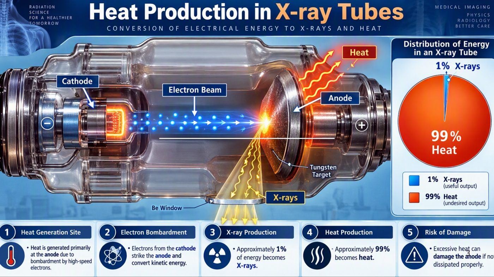
السعة الحرارية والتبريدB. Heat Capacity and Cooling
ب. السعة الحرارية والتبريدB. Heat Capacity and Cooling
The heat capacity of the anode refers to the amount of heat it can absorb before its temperature rises to dangerous levels.
السعة الحرارية للأنود هي كمية الحرارة التي يستطيع امتصاصها قبل أن ترتفع درجة حرارته إلى مستويات خطرة.
Anodes are typically made of tungsten due to its high melting point and excellent heat tolerance.
تُصنع الأنودات عادةً من التنغستن لارتفاع درجة انصهاره وتحمّله الممتاز للحرارة.
even tungsten anodes require adequate cooling mechanisms
حتى أنودات التنغستن تحتاج إلى آليات تبريد كافية.
Cooling can be achieved through conduction (via rotating anodes), convection (circulation of air or oil), or radiation (emitting infrared heat)
يمكن تحقيق التبريد بالتوصيل (عبر الأنودات الدوّارة)، أو بالحمل (دوران الهواء أو الزيت)، أو بالإشعاع (انبعاث الحرارة بالأشعة تحت الحمراء).
Modern X-ray tubes use several strategies to manage heat, including rotating anodes, which distribute the heat over a larger area, and oil-based cooling systems that dissipate the heat externally.
تستعمل أنابيب الأشعة الحديثة عدّة استراتيجيات لإدارة الحرارة، منها الأنودات الدوّارة التي توزّع الحرارة على مساحة أكبر، وأنظمة التبريد بالزيت التي تبدّد الحرارة إلى الخارج.
The maximum heat storage of the tube is often expressed in terms of Heat Units (HU), and the cooling rate is essential to ensure the tube’s longevity
يُعبَّر عن أقصى خزن حراري للأنبوب غالباً بالوحدات الحرارية (HU)، ومعدّل التبريد ضروري لضمان عمر الأنبوب.
العوامل المؤثرة في السعة الحرارية: مادة الأنودFactors Affecting the Heat Capacity — A. Material Composition
العوامل المؤثرة في السعة الحراريةFactors Affecting the Heat Capacity
The heat capacity of an X-ray tube refers to its ability to absorb and store heat without reaching temperatures that could damage the tube components.
السعة الحرارية لأنبوب الأشعة السينية تعني قدرته على امتصاص الحرارة وخزنها دون الوصول إلى درجات حرارة قد تتلف مكوّنات الأنبوب.
Heat management is critical in maintaining the functionality and longevity of X-ray tubes.
إدارة الحرارة أمر حاسم للحفاظ على وظيفة أنابيب الأشعة السينية وعمرها.
Several factors affect the heat capacity :
تؤثر عدّة عوامل في السعة الحرارية:
- • A. Material Compositionأ. تركيب المادة
- • B. Anode Designب. تصميم الأنود
- • C. Sizeand Surface Areaج. الحجم والمساحة السطحية
- • D .Cooling Mechanismsد. آليات التبريد
- • E .Operational Factorsهـ. العوامل التشغيلية
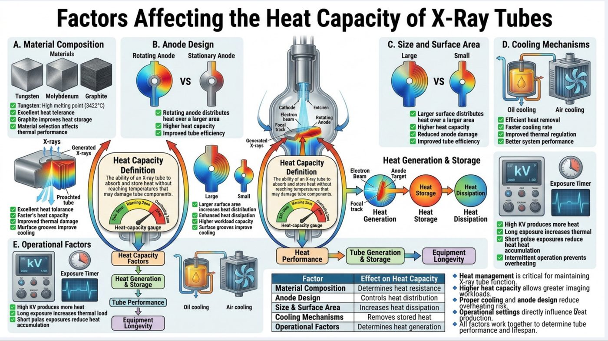
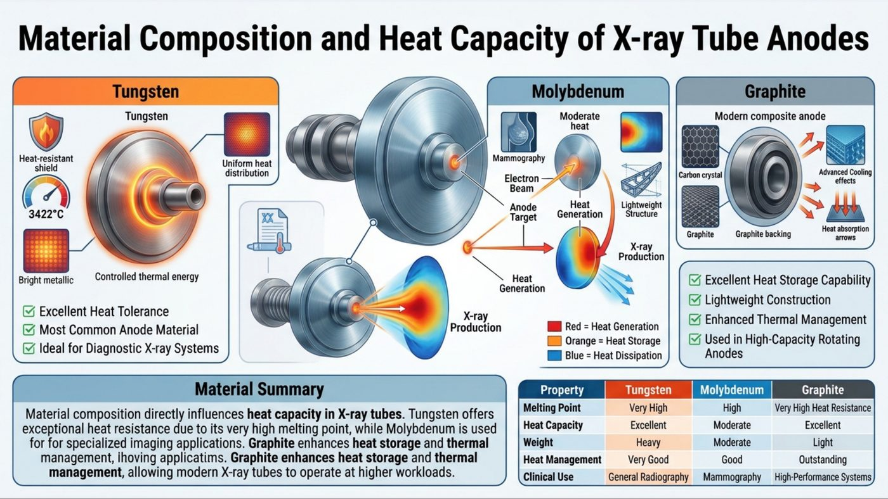
تصميم الأنود وحجمه ومساحته السطحيةB. Anode Design and C. Size and Surface Area
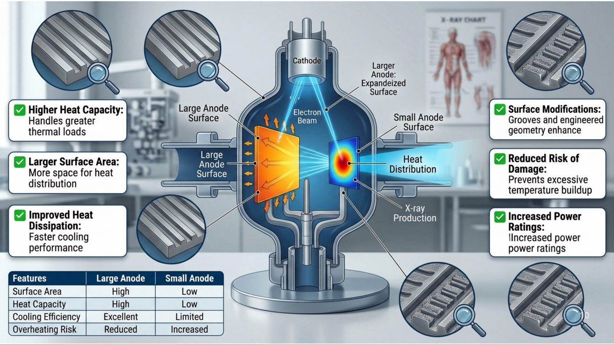
آليات التبريدD. Cooling Mechanisms
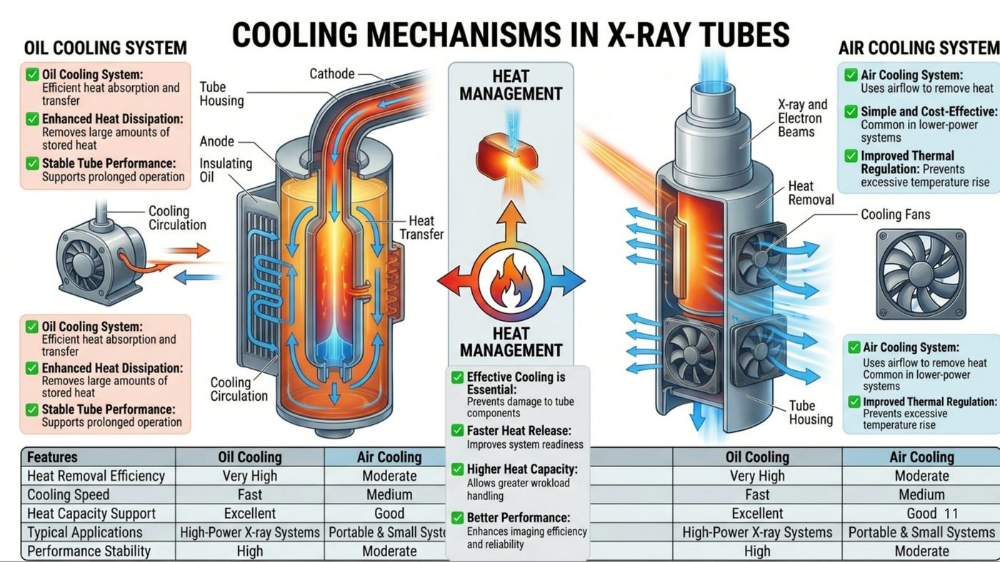
العوامل التشغيليةE. Operational Factors
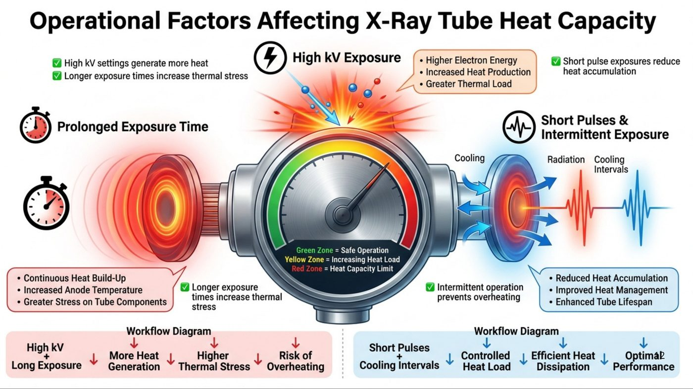
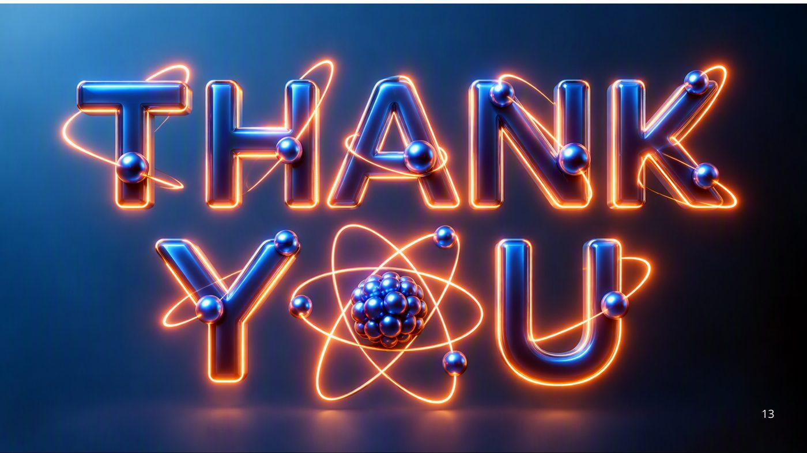
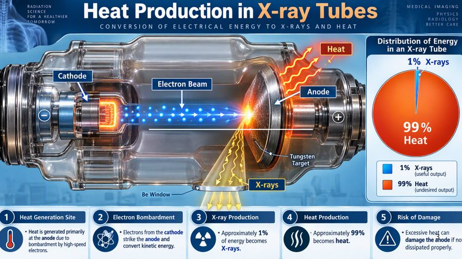
الترجمة العربية
FundamentalsofRadio-physics
FirstSemester(2026-2027)
Experiment(4)
X-rayTubeHeatingandCooling
FactorsAffectingtheheatcapacity
أساسيات الفيزياء الإشعاعية
الفصل الدراسي الأول (2026-2027)
التجربة (4)
تسخين وتبريد أنبوب الأشعة السينية
العوامل المؤثرة في السعة الحرارية
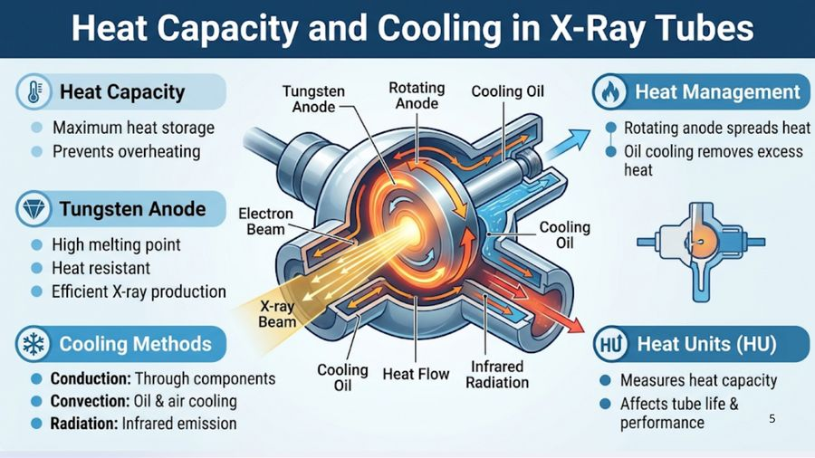
الترجمة العربية
2
X-ray Tube Heating and Cooling
A. Heat Production in X-ray Tubes
Heat is generated primarily at the anode
When electrons from the cathode strike the anode, their kinetic energy is
transformed.
electrons electrons
Asmall fraction of this energy produces X rays through the bremsstrahlung process
and characteristic X-ray emission, but the vast majority (about 99%) results in heat.
This high level of heat can cause damage to the anode if not dissipated properly. high level of heat c high level of heat c
تسخين وتبريد أنبوب الأشعة السينية
أ. إنتاج الحرارة في أنابيب الأشعة السينية
تتولّد الحرارة بصورة رئيسية في الأنود.
عندما تصطدم الإلكترونات القادمة من الكاثود بالأنود تتحوّل طاقتها الحركية.
يُنتج جزء صغير من هذه الطاقة الأشعة السينية عبر عملية أشعة الكبح (Bremsstrahlung) والأشعة السينية المميِّزة، أما الغالبية العظمى (نحو 99%) فتتحوّل إلى حرارة.
قد يؤدي هذا المستوى العالي من الحرارة إلى تلف الأنود إن لم تُبدَّد بصورة صحيحة.
الترجمة العربية
RADIATION
SCIENCE
FOR A HEALTHIER
TOMORROW
Heat Production in X-ray Tubes
CONVERSION OF ELECTRICAL ENERGY TO X-RAYS AND HEAT
Heat
MEDICAL IMAGING
PHYSICS
RADIOLOGY
BETTER CARE
Distribution of Energy
in an X-ray Tube
1% X-rays
Cathode
Electron Beam
Anode
99%
Heat
Tungsten
Target
X-rays
1%
X-rays
(useful output)
99% Heat
(undesired output)
Be Window
Heat Generation Site
• Heat is generated primarily
at the anode due to
bombardment by high-speed
electrons.
2
Electron Bombardment
• Electrons from the cathode
strike the anode and
convert kinetic energy.
3
X-ray Production
• Approximately 1%
of energy becomes
X-rays.
4
Heat Production
• Approximately 99%
becomes heat.
5
Risk of Damage
• Excessive heat can
damage the ahode if no
dissipated properly.
علم الإشعاع من أجل غدٍ أكثر صحة
إنتاج الحرارة في أنابيب الأشعة السينية
تحويل الطاقة الكهربائية إلى أشعة سينية وحرارة
التصوير الطبي · الفيزياء · الأشعة · رعاية أفضل
توزيع الطاقة في أنبوب الأشعة السينية
1% أشعة سينية (ناتج مفيد)
99% حرارة (ناتج غير مرغوب)
الكاثود · حزمة الإلكترونات · الأنود · هدف التنغستن · نافذة البريليوم
1) موضع توليد الحرارة: تتولّد الحرارة بصورة رئيسية في الأنود نتيجة قصفه بإلكترونات عالية السرعة.
2) قصف الإلكترونات: تصطدم إلكترونات الكاثود بالأنود وتحوّل طاقتها الحركية.
3) إنتاج الأشعة السينية: نحو 1% من الطاقة يتحوّل إلى أشعة سينية.
4) إنتاج الحرارة: نحو 99% يتحوّل إلى حرارة.
5) خطر التلف: قد تتلف الحرارة الزائدة الأنود إذا لم تُبدَّد بصورة صحيحة.
الترجمة العربية
4
B. Heat Capacity and Cooling B. Heat Capacity and Cooling
The heat capacity of the anode refers to the amount of heat it can absorb before its
temperature rises to dangerous levels.
Anodes are typically made of tungsten due to its high melting point and excellent heat
tolerance.
even tungsten anodes require adequate cooling mechanisms
Cooling can be achieved through conduction (via rotating anodes), convection
(circulation of air or oil), or radiation (emitting infrared heat)
Modern X-ray tubes use several strategies to manage heat, including
rotating anodes, which distribute the heat over a larger area, and oil-based
cooling systems that dissipate the heat externally.
The maximum heat storage of the tube is often expressed in terms of Heat Units
(HU), and the cooling rate is essential to ensure the tube’s longevity
ب. السعة الحرارية والتبريد
تشير السعة الحرارية للأنود إلى مقدار الحرارة التي يستطيع امتصاصها قبل أن ترتفع درجة حرارته إلى مستويات خطرة.
تُصنع الأنودات عادةً من التنغستن لارتفاع درجة انصهاره وتحمّله الحراري الممتاز.
حتى أنودات التنغستن تحتاج إلى آليات تبريد كافية.
يمكن تحقيق التبريد بالتوصيل الحراري (عبر الأنودات الدوّارة)، أو بالحمل الحراري (دوران الهواء أو الزيت)، أو بالإشعاع (انبعاث الحرارة بالأشعة تحت الحمراء).
تستخدم أنابيب الأشعة السينية الحديثة استراتيجيات عدّة لإدارة الحرارة، منها الأنودات الدوّارة التي توزّع الحرارة على مساحة أكبر، وأنظمة التبريد بالزيت التي تبدّد الحرارة إلى الخارج.
يُعبَّر غالباً عن أقصى سعة تخزين حراري للأنبوب بالوحدات الحرارية (HU)، ويُعدّ معدل التبريد أساسياً لضمان طول عمر الأنبوب.
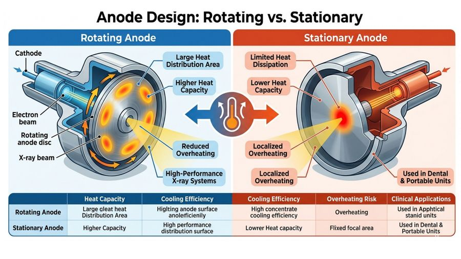
الترجمة العربية
Heat Capacity and Cooling in X-Ray Tubes
Heat Capacity
Maximum heat storage
Prevents overheating
Tungsten
Anode
Rotating
Anode
Cooling Oil
Heat Management
Rotating anode spreads heat
Oil cooling removes excess
heat
Tungsten Anode
• High melting point
• Heat resistant
Efficient X-ray production
Electron
Beam
X-ray
Beam
Cooling Methods
• Conduction: Through components
• Convection: Oil & air cooling
• Radiation: Infrared emission
Cooling
Oil
HU
Cooling Heat Flow
Oil
Infrared
Radiation
Heat Units (HU)
Measures heat capacity
Affects tube life &
performance
5
السعة الحرارية والتبريد في أنابيب الأشعة السينية
السعة الحرارية: أقصى قدرة على تخزين الحرارة، وتمنع فرط التسخين.
أنود التنغستن: درجة انصهار عالية، ومقاوم للحرارة، وإنتاج كفوء للأشعة السينية.
إدارة الحرارة: الأنود الدوّار ينشر الحرارة، والتبريد بالزيت يزيل الحرارة الزائدة.
طرائق التبريد:
• التوصيل: عبر مكوّنات الأنبوب
• الحمل: التبريد بالزيت والهواء
• الإشعاع: انبعاث الأشعة تحت الحمراء
الوحدات الحرارية (HU): تقيس السعة الحرارية، وتؤثر في عمر الأنبوب وأدائه.
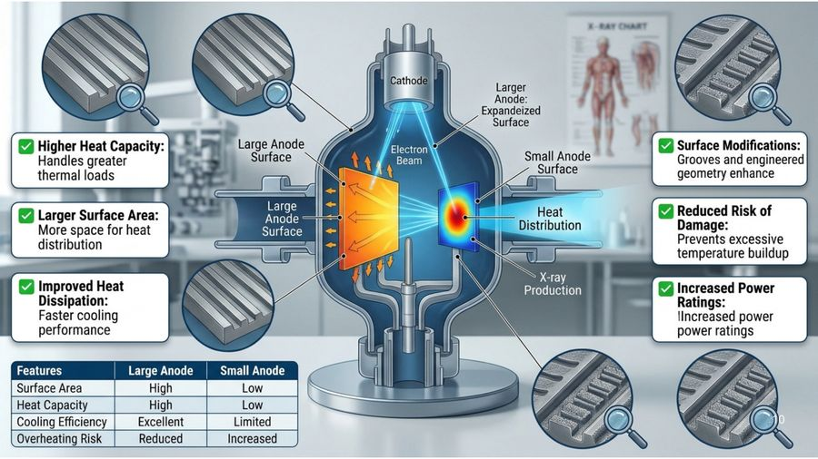
الترجمة العربية
6
Factors Affecting the Heat Capacity
The heat capacity of an X-ray tube refers to its ability to absorb and store heat
without reaching temperatures that could damage the tube components.
Heat management is critical in maintaining the functionality and longevity of X-ray
tubes.
Several factors affect the heat capacity :
A. Material Composition
B. Anode Design
C. Sizeand Surface Area
D .Cooling Mechanisms
E .Operational Factors
العوامل المؤثرة في السعة الحرارية
تشير السعة الحرارية لأنبوب الأشعة السينية إلى قدرته على امتصاص الحرارة وتخزينها دون بلوغ درجات حرارة قد تتلف مكوّناته.
إدارة الحرارة أمر حاسم للحفاظ على وظيفة أنابيب الأشعة السينية وطول عمرها.
تؤثر في السعة الحرارية عوامل عدّة:
أ. تركيب المادة
ب. تصميم الأنود
ج. الحجم والمساحة السطحية
د. آليات التبريد
هـ. العوامل التشغيلية
الترجمة العربية
Factors Affecting the Heat Capacity of X-Ray Tubes
A. Material Composition
Materials
B. Anode Design
Rotating Anode
Stationary Anode
C. Size and Surface Area
Large
Small
D. Cooling Mechanisms
VS
Tungsten
Molybdenum
Graphite
2 Tungsten: High melting point (3422°C)
+ Excelient heat telerance
* Graphite improves heat storage
J Material selection affects
thermal performance
X-rays
Rotating anode distributes
heat over a larger area
Higher heat capacity
Improved tube efficiency
Cathode
Electron
beam
Focal
track
Entciren
Rotating
• Anode
Generated
X-rays
Generated
X-rays
Proachted
tube
V Excellent heat tolarance
M Faster's heat capacity
Improved thermal damage
M Murface grooves improve
cooling
E. Operational Factors
Heat Capacity
Definition
The ability of an X-ray tube to
absorb and store heat without
reaching temperatures that
may damage tube components.
Warning Zone
Oetlenieg atoe
Large
Small
V Larger surface aree
incresses heat distribution
Enhansed heat dissipation
• Higher workload capacity
• Surface grooves improve
cooling
Heat Capacity
Definition
The ability of an X-ray tube to
absorb and store heat without
resching temperatures that
may damage tube components.
gjaraing Z0s0
DIVAANO ERIO
Heat-capacity gauge
Heat-capacity gauge
Heat Capacity
Factors
Heat
Performance
Exposure Timer
Heat Generation
& Storage
VS
Larger surface distributes
heat over a larger area
Higher heat capacity
Reduced anode damage
Improved tube efficiency
Electron
Beam
Heat Generation & Storage
Anode
Target
Heat
Storage
Heat
Dissipation
Focal
track
Heat
Generation
Heat
Storage
Heat
Dissipation
Tube Generation
& Storage
Equipment
Longevity
Oil cooling
Air cooling
D Efficient heat removal
L Faster cooling rate
Improved thermal regulation
Better system performance
kV
1:30
Exposure Timer
Tube Performance
V High KV produces more heat
w Long exposure increases thermal load
M Short pulas exposures reduce heat
accumulation
Oil cooling
Air cooling
Equipment
Longevity
Factor
Material Composition
Anode Design
Size & Surface Area
Cooling Mechanisms
Operational Factors
Effect on Heat Capacity
Determines heat resistance
Controls heat distribution
Increases heat dissipation
Removes stored heat
Determines heat generation
Z High KV produces more heat
V Long esposure increases thermal
• Short polse exposures reduce
heat heat
accumulation
v Intermittent operation prevents
overheating
• Heat management is critical for maintaining
• Higher heat capacity allows greater imaging
workloads.
• Proper cooling and anode design reduce
overheating risk.
• Operational settings directly influence Veat
• All factors work together to determine tub
performance and lifespan.
العوامل المؤثرة في السعة الحرارية لأنابيب الأشعة السينية
أ. تركيب المادة: التنغستن والموليبدنوم والغرافيت.
• التنغستن: درجة انصهار عالية (3422°م) وتحمّل حراري ممتاز.
• الغرافيت يحسّن تخزين الحرارة.
• اختيار المادة يؤثر في الأداء الحراري.
ب. تصميم الأنود: أنود دوّار مقابل أنود ثابت.
• الأنود الدوّار يوزّع الحرارة على مساحة أكبر، فيعطي سعة حرارية أعلى وكفاءة أفضل للأنبوب.
ج. الحجم والمساحة السطحية: كبير مقابل صغير.
• المساحة السطحية الأكبر تزيد توزيع الحرارة وتبديدها، وتتيح قدرة أعلى على العمل، والأخاديد السطحية تحسّن التبريد.
د. آليات التبريد: التبريد بالزيت والتبريد بالهواء.
• إزالة كفوءة للحرارة، ومعدل تبريد أسرع، وتنظيم حراري أفضل، وأداء أفضل للجهاز.
هـ. العوامل التشغيلية: الجهد الكيلوفولتي (kV) وزمن التعرّض.
• ارتفاع kV يولّد حرارة أكبر.
• التعرّض الطويل يزيد الحمل الحراري.
• التعرّضات النبضية القصيرة تقلّل تراكم الحرارة.
• التشغيل المتقطع يمنع فرط التسخين.
تعريف السعة الحرارية: قدرة أنبوب الأشعة السينية على امتصاص الحرارة وتخزينها دون بلوغ درجات حرارة قد تتلف مكوّناته.
مقياس السعة الحرارية: منطقة تحذير.
ملخص التأثير في السعة الحرارية:
• تركيب المادة: يحدّد مقاومة الحرارة.
• تصميم الأنود: يتحكم في توزيع الحرارة.
• الحجم والمساحة السطحية: يزيدان تبديد الحرارة.
• آليات التبريد: تزيل الحرارة المخزّنة.
• العوامل التشغيلية: تحدّد مقدار الحرارة المتولّدة.
الخلاصة: السعة الحرارية الأعلى تتيح أحمال تصوير أكبر، والتبريد الجيد وتصميم الأنود يقلّلان خطر فرط التسخين، وإعدادات التشغيل تؤثر مباشرة في الحرارة، وتعمل جميع العوامل معاً لتحديد أداء الأنبوب وعمره.
الترجمة العربية
Material Composition and Heat Capacity of X-ray Tube Anodes
Tungsten
Tungsten
Molybdenum
Moderate
heat
Graphite
Modern composite anode
Heat-resistant
shield
3422°C
Uniform heat
distribution
Bright metallic
Controlled thermal energy
Excellent Heat Tolerance
Most Common Anode Material
M Ideal for Diagnostic X-ray Systems
X-ray
Production
Material Summary
Material composition directly influences heat capacity in X-ray tubes. Tungsten offers
exceptional heat resistance due to its very high melting point, while Molybdenum is used
for for specialized imaging applications. Graphite enhances heat storage and thermal
management, ihoving applicatims. Graphite enhances heat storage and thermal
management, allowing modern X-ray tubes to operate at higher workloads.
Mammography
Electron
Beam
Anode
Target
Carbon crystal
Advanced Cooling
effects
Heat
Generation
Lightweight
Structure
X-ray
Production
Heat
Generation
Red = Heat Generation
Orange = Heat Storage
Blue = Heat Dissipation
Property
Melting Point
Heat Capacity
Weight
Heat Management
Clinical Use
Heat absorption
Graphite
Graphite backing
arrows
V
Excellent Heat Storage Capability
Lightweight Construction
Enhanced Thermal Management
Used in High-Capacity Rotating
Anodes
Tungsten
Very High
Excellent
Heavy
Very Good
General Radiography
Molybdenum
High
Moderate
Moderate
Good
Mammography
Graphite
Very High Heat Resistance
Excellent
Light
Outstanding
High-Performance Systems
تركيب المادة والسعة الحرارية لأنودات أنبوب الأشعة السينية
التنغستن: أكثر مواد الأنود شيوعاً، ودرجة انصهاره 3422°م، وتحمّله الحراري ممتاز، ومثالي لأجهزة الأشعة التشخيصية.
الموليبدنوم: تحمّل حراري متوسط، ويُستخدم في التطبيقات التصويرية المتخصصة مثل تصوير الثدي الشعاعي (Mammography).
الغرافيت: يحسّن تخزين الحرارة والإدارة الحرارية، ما يتيح لأنابيب الأشعة السينية الحديثة العمل بأحمال أعلى. وهو خفيف الوزن ويُستخدم خلف الأنود في الأنودات الدوّارة عالية السعة.
ملخص المواد: يؤثر تركيب المادة مباشرةً في السعة الحرارية. يوفّر التنغستن مقاومة حرارية استثنائية لارتفاع درجة انصهاره، ويُستخدم الموليبدنوم في التطبيقات التصويرية المتخصصة، ويحسّن الغرافيت تخزين الحرارة وإدارتها.
الألوان: الأحمر = توليد الحرارة، البرتقالي = تخزين الحرارة، الأزرق = تبديد الحرارة.
مقارنة:
• التنغستن: درجة انصهار عالية جداً، سعة حرارية ممتازة، ثقيل، إدارة حرارية جيدة جداً، الاستخدام: التصوير الشعاعي العام.
• الموليبدنوم: درجة انصهار عالية، سعة حرارية متوسطة، وزن متوسط، إدارة حرارية جيدة، الاستخدام: تصوير الثدي الشعاعي.
• الغرافيت: مقاومة حرارية عالية جداً، سعة ممتازة، خفيف، إدارة حرارية متميزة، الاستخدام: الأنظمة عالية الأداء.
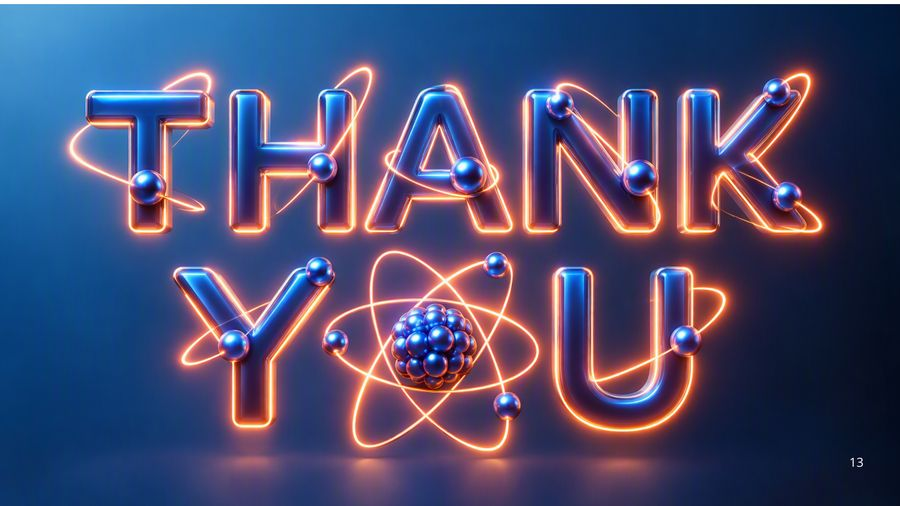
الترجمة العربية
Anode Design: Rotating vs. Stationary
Rotating Anode
Stationary Anode
Cathode
Large Heat
Distribution Area
Higher Heat
Capacity
Limited Heat
Dissipation
Lower Heat
Capacity
Electron
beam
Rotating
anode disc
X-ray beam
Rotating Anode
Stationary Anode
Heat Capacity
Large gleat heat
Distribution Area
Higher Capacity
Reduced
Overheating
High-Performance
X-ray Systems
Cooling Efficiency
Higlting anode surface
anoleificienily
High performance
distribution surface
Localized
Overheating
Localized
Overheating
Cooling Efficiency
High concentrate
cooling efficiency
Lowrer Heat capacity
Overheating Risk
Overheating
Flixed focal area
Used in Dental
& Portable Units
Clinical Applications
Used in Apphtical
stanid units
Used in Dental &
Portable Units
تصميم الأنود: الدوّار مقابل الثابت
الأنود الدوّار: مساحة كبيرة لتوزيع الحرارة، وسعة حرارية أعلى، وتقليل فرط التسخين، وكفاءة تبريد عالية، ويُستخدم في أنظمة الأشعة عالية الأداء. (قرص الأنود الدوّار، حزمة الإلكترونات، حزمة الأشعة السينية)
الأنود الثابت: تبديد حراري محدود، وسعة حرارية أقل، وفرط تسخين موضعي، وكفاءة تبريد أقل، ومساحة بؤرية ثابتة، ويُستخدم في أجهزة الأسنان والأجهزة المتنقلة.

الترجمة العربية
Higher Heat Capacity:
Handles greater
thermal loads
Larger Surface Area:
More space for heat
distribution
Improved Heat
Dissipation:
Faster cooling
performance
Features
Surface Area
Heat Capacity
Cooling Efficiency
Overheating Risk
Large Anode
High
High
Excellent
Reduced
Large Anode
Surface
Large
Anode
Surface
Small Anode
Low
Low
Limited
Increased
Cathode
Electron
Beam
Larger
Anode:
Expandeized
Surface
Small Anode
Surface
Heat
Distribution
• X-ray
Production
Surface Modifications:
Grooves and engineered
geometry enhance
Reduced Risk of
Damage:
Prevents excessive
temperature buildup
Increased Power
Ratings:
IIncreased power
power ratings
سعة حرارية أعلى: يتحمّل أحمالاً حرارية أكبر.
مساحة سطحية أكبر: حيّز أوسع لتوزيع الحرارة.
تبديد حراري محسّن: أداء تبريد أسرع.
تعديلات السطح: الأخاديد والهندسة المصمَّمة تحسّن التبريد.
تقليل خطر التلف: يمنع تراكم الحرارة المفرط.
زيادة القدرة المقنّنة (Power Ratings).
مقارنة:
• الأنود الكبير: مساحة سطحية كبيرة، وسعة حرارية عالية، وكفاءة تبريد ممتازة، وخطر فرط التسخين أقل.
• الأنود الصغير: مساحة سطحية صغيرة، وسعة حرارية منخفضة، وكفاءة تبريد محدودة، وخطر فرط التسخين أعلى.
(الكاثود، حزمة الإلكترونات، توزيع الحرارة، إنتاج الأشعة السينية)

الترجمة العربية
OIL COOLING SYSTEM
Oil Cooling System:
Efficient heatabsorption and
transfer
Enhanced Heat Dissipation:
Removes large amounts of
stored heat
Stable Tube Performance:
Supports prolonged operation
Tube
Housing
Anode
Insulating
Oil
Cooling
Circulation
COOLING MECHANISMS IN X-RAY TUBES
Cathode
HEAT
MANAGEMENT
X-ray and
Electron
Beams
Heat
Removal
AIR COOLING SYSTEM
Air Cooling System:
Uses airflow to remove heat
Simple and Cost-Effective:
Common in lower-power
systems
Improved Thermal
Regulation: Prevents
excessive temperature rise
Cooling Fans
EUIU
- Heat
Transfer
Oil Cooling System:
Efficient heat absorption and
transfer
Enhanced Heat Dissipation:
Removes large amounts of
stored heat
Stable Tube Performance:
Supports prolonged operation
Features
Heat Removal Efficiency
Cooling Speed
Heat Capacity Support
Typical Applications
Performance Stability
Cooling
Circulation
Oil Cooling
Air Cooling
Very High
Moderate
Fast
Medium
Excellent
Good
High-Power X-ray Systems Portable & Small Systr
High
Moderate
HEAT
MANAGEMENT
Effective Cooling is
Essential:
Prevents damage to tube
components
Faster Heat Release:
Improves system readiness
Higher Heat Capacity:
Allows greater wrokload
handling
Better Performance:
Enhances imaging efficiency
and reliability
Tube
Housing
Oil Cooling
Very High
Fast
Excellent
High-Power X-ray Systems
High
V Air Cooling System:
Uses airflow to remove heat
Common in lower-power
systems
Improved Thermal Regulation:
Prevents excessive
temperature rise
Air Cooling
Moderate
Medium
Good 11
Portable & Small Systems
Moderate
نظام التبريد بالزيت: امتصاص الحرارة ونقلها بكفاءة، وتبديد أفضل للحرارة بإزالة كميات كبيرة من الحرارة المخزّنة، وأداء مستقر للأنبوب يدعم التشغيل المطوّل.
نظام التبريد بالهواء: يستخدم تدفق الهواء لإزالة الحرارة، وهو بسيط وقليل الكلفة، وشائع في الأنظمة منخفضة القدرة، ويحسّن التنظيم الحراري ويمنع الارتفاع المفرط في درجة الحرارة (مراوح التبريد).
آليات التبريد في أنابيب الأشعة السينية: (غلاف الأنبوب، الأنود، الزيت العازل، دوران التبريد، الكاثود، حزمتا الأشعة والإلكترونات، إزالة الحرارة).
مقارنة:
• التبريد بالزيت: كفاءة إزالة حرارة عالية جداً، سرعة تبريد سريعة، دعم السعة الحرارية ممتاز، ثبات الأداء عالٍ، الاستخدام: أنظمة الأشعة عالية القدرة.
• التبريد بالهواء: كفاءة إزالة حرارة متوسطة، سرعة تبريد متوسطة، دعم السعة الحرارية جيد، ثبات الأداء متوسط، الاستخدام: الأنظمة المتنقلة والصغيرة.
إدارة الحرارة: التبريد الفعّال ضروري لأنه يمنع تلف مكوّنات الأنبوب، ويحرّر الحرارة أسرع فيحسّن جاهزية النظام، ويتيح سعة حرارية أعلى وتحمّل أحمال عمل أكبر، ويحسّن كفاءة التصوير وموثوقيته.

الترجمة العربية
Operational Factors Affecting X-Ray Tube Heat Capacity
High kV Exposure
High kV settings generate more heat
Z Longer exposure times increase thermal stress
• Higher Electron Energy
• Increased Heat Production
• Greater Thermal Load
Short pulse exposures reduce
heat accumulation
Prolonged Exposure Time
Cooling
Short Pulses &
Intermittent Exposure
Radiation
Cooling
Intervals
Green Zone = Safe Operation
Yellow Zone = Increasing Heat Load
Red Zone = Heat Capacity Limit
• Continuous Heat Build-Up
• Increased Anode Temperature
• Greater Stress on Tube Components
Workflow Diagram
High kV
+
Long Exposure
More Heat
Generation
Longer exposure
times increase thermal
stress
Higher
Thermal Stress
Risk of
Overheating
Intermittent operation
prevents overheating
• Reduced Heat Accumulation
• Improved Heat Management
• Enhanced Tube Lifespan
Workflow Diagram
Short Pulses
Cooling Intervals
1 Controllea
Heat Load
J Efficient Heat
Dissipation
OptimaR
Performance
العوامل التشغيلية المؤثرة في السعة الحرارية لأنبوب الأشعة السينية
التعرّض بجهد kV عالٍ: تولّد إعدادات kV العالية حرارة أكبر. (طاقة إلكترونات أعلى، وإنتاج حرارة أكبر، وحمل حراري أكبر)
زمن التعرّض الطويل: تزيد أزمنة التعرّض الأطول الإجهاد الحراري. (تراكم مستمر للحرارة، وارتفاع درجة حرارة الأنود، وإجهاد أكبر على مكوّنات الأنبوب)
النبضات القصيرة والتعرّض المتقطع: تقلّل التعرّضات النبضية القصيرة تراكم الحرارة، ويمنع التشغيل المتقطع فرط التسخين. (تقليل تراكم الحرارة، وتحسين إدارة الحرارة، وإطالة عمر الأنبوب)
المناطق: الخضراء = تشغيل آمن، الصفراء = حمل حراري متزايد، الحمراء = حدّ السعة الحرارية.
مخطط سير العمل: kV عالٍ + تعرّض طويل ← توليد حرارة أكبر ← إجهاد حراري أعلى ← خطر فرط التسخين.
النبضات القصيرة + فترات التبريد ← حمل حراري متحكَّم به ← تبديد حراري كفء ← أداء أمثل.

الترجمة العربية
شكراً لكم
المحاضرة مسموعة
نص الأستاذ بالإنكليزي مثل الأصل · 2.5 دقيقة. اضغط أي جملة تسمعها، أو مصطلح منقّط تسمع لفظه ومعناه.
A. Heat Production in X-ray Tubesإنتاج الحرارة في أنبوب الأشعة
A. Heat Production in X-ray Tubes
Experiment(4) X-ray Tube Heating and Cooling Factors Affecting the heat capacity
A. Heat Production in X-ray Tubes
Heat is generated primarily at the anode
When electrons from the cathode strike the anode, their kinetic energy is transformed.
Asmall fraction of this energy produces X rays through the bremsstrahlung process and characteristic X-ray emission, but the vast majority (about 99%) results in heat.
This high level of heat can cause damage to the anode if not dissipated properly.
B. Heat Capacity and Coolingالسعة الحرارية والتبريد
B. Heat Capacity and Cooling
B. Heat Capacity and Cooling
The heat capacity of the anode refers to the amount of heat it can absorb before its temperature rises to dangerous levels.
Anodes are typically made of tungsten due to its high melting point and excellent heat tolerance.
even tungsten anodes require adequate cooling mechanisms
Cooling can be achieved through conduction (via rotating anodes), convection (circulation of air or oil), or radiation (emitting infrared heat)
Modern X-ray tubes use several strategies to manage heat, including rotating anodes, which distribute the heat over a larger area, and oil-based cooling systems that dissipate the heat externally.
The maximum heat storage of the tube is often expressed in terms of Heat Units (HU), and the cooling rate is essential to ensure the tube’s longevity
Factors Affecting the Heat Capacity — A. Material Compositionالعوامل المؤثرة في السعة الحرارية: مادة الأنود
Factors Affecting the Heat Capacity — A. Material Composition
Factors Affecting the Heat Capacity
The heat capacity of an X-ray tube refers to its ability to absorb and store heat without reaching temperatures that could damage the tube components.
Heat management is critical in maintaining the functionality and longevity of X-ray tubes.
Several factors affect the heat capacity :
A. Material Composition
B. Anode Design
C. Sizeand Surface Area
D .Cooling Mechanisms
E .Operational Factors
B. Anode Design and C. Size and Surface Areaتصميم الأنود وحجمه ومساحته السطحية
B. Anode Design and C. Size and Surface Area
D. Cooling Mechanismsآليات التبريد
D. Cooling Mechanisms
E. Operational Factorsالعوامل التشغيلية
E. Operational Factors
كل أسئلة المحاضرة: السؤال إنكليزي وتحته عربي، وكل خيار بلغتين، والجواب الصحيح معلّم ويّاه «ليش صح» · 0.3 MB
قراءة الأسئلة تحميلاضغط أي مصطلح منقّط تسمع لفظه ومعناه.